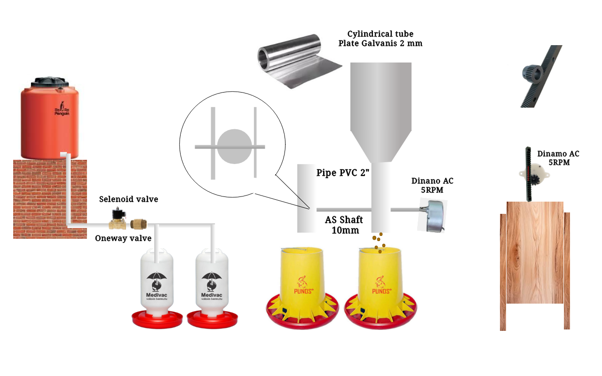

Ringkasan
- Otomasi penuh berbasis matahari. Waktu buka/tutup pintu, nyala/mati lampu, pemberian pakan, dan air minum dihitung otomatis dari koordinat lokasi kandang menggunakan pustaka
TimeLord, bukan jam tetap. - Kendali jarak dekat via BLE. Modul HM-10 / CC2540 memungkinkan ponsel terhubung langsung ke Arduino Mega dan mengirim perintah teks sederhana yang diawali tanda
?. - Sensor & pengaman fisik. Sakelar batas (limit switch) menjaga motor pintu tidak bergerak melampaui posisi buka/tutup, sementara pelampung (float switch) mencegah tandon air meluap.
- Kendali manual tetap tersedia. Tombol fisik untuk lampu, pakan, dan air tetap berfungsi berdampingan dengan jadwal otomatis dan perintah BLE.
Jadwal Otomatis Berbasis Matahari
(saat fajar)
(+15 mnt)
(+30 mnt)
(12:00)
(−4 jam)
(−2 jam)
(+30 mnt senja)
Gradasi kiri–kanan merepresentasikan satu siklus harian: fajar → siang → senja → malam. Posisi penanda bersifat ilustratif, waktu aktual dihitung ulang tiap hari oleh calculateAlarmTimes().
Fitur Utama
Pintu Kandang Otomatis
Membuka & menutup pintu mengikuti waktu terbit/terbenam matahari, dilengkapi limit switch atas-bawah dan tombol manual.
Pencahayaan Cerdas
Mengatur lama pencahayaan tambahan (photoperiod control) agar total jam terang harian tercapai untuk produktivitas optimal.
Pemberian Pakan Otomatis
Menjadwalkan pemberian pakan pagi, siang, sore, dan malam — dapat pula dipicu manual dengan durasi terprogram.
Air Minum Otomatis
Katup solenoid mengisi air minum, dipadukan dengan pelampung (float switch) agar suplai tetap terjaga tanpa meluap.
Kendali Iklim / Kipas
Sensor suhu DS18B20 memantau suhu kandang dan menyalakan kipas otomatis saat melewati ambang batas aman.
Konektivitas BLE
Modul HM-10 memungkinkan status sistem dipantau dan dikendalikan langsung dari aplikasi smartphone.
Konfigurasi Wiring
| Komponen | Pin Arduino Mega | Keterangan |
|---|---|---|
| HM-10 TX | Pin 19 (RX1) | Hardware Serial Line 1 |
| HM-10 RX | Pin 18 (TX1) | Gunakan pembagi tegangan 3.3V |
| HM-10 VCC | 3.3V | Suplai daya modul BLE |
| HM-10 GND | GND | Ground bersama |
| Tombol Lampu | Pin 2 | Kendali manual lampu |
| Tombol Air | Pin 3 | Kendali manual air |
| Relay Pintu Tutup | Pin 4 | Relay motor pintu (Close) |
| Relay Pintu Buka | Pin 5 | Relay motor pintu (Open) |
| Sensor Suhu Udara | Pin 6 | DS18B20 (OneWire) |
| Relay Lampu | Pin 8 | Relay pencahayaan kandang |
| Relay Pakan | Pin 9 | Relay motor pemberi pakan |
| Relay Kipas | Pin 10 | Relay kipas ventilasi |
| Relay Solenoid Air | Pin 11 | Relay katup solenoid air |
| Sakelar Buka Pintu | A0 | Limit switch batas buka |
| Sakelar Tutup Pintu | A1 | Limit switch batas tutup |
| Tombol Pakan | A2 | Kendali manual pakan |
| Pelampung Air | A3 | Float switch level air |
| Stop Tutup Pintu | A6 | Sensor analog batas tutup |
| Stop Buka Pintu | A7 | Sensor analog batas buka |
Skema Elektronik

Diagram Konstruksi

Perintah BLE
?Menyalakan atau mematikan sistem air minum secara manual. Balasan: OK+water=on / OK+water=off.
Mengendalikan lampu kandang, termasuk mode toggle untuk membalik status saat ini.
Memicu pemberian pakan secara manual selama durasi terprogram (20 detik).
Membuka atau menutup pintu kandang, dibatasi otomatis oleh limit switch fisik.
Mengendalikan kipas ventilasi secara manual, terlepas dari kendali otomatis berbasis suhu.
Meminta status seluruh perangkat (lampu, kipas, pakan, air, posisi pintu, suhu, dan waktu) dalam format JSON.
Menampilkan alamat MAC, nama, level baterai, dan RSSI modul BLE.
Membaca status digital sebuah pin.
Membaca nilai analog sebuah pin.
Menulis nilai digital (v = 0/1) ke pin tertentu.
Mengatur mode pin (INPUT / OUTPUT) secara langsung dari BLE.
Pustaka yang Dibutuhkan
Wire.h— bawaan Arduino IDEOneWire.h— komunikasi sensor suhu DS18B20TimeLord— perhitungan waktu matahari terbit/terbenamTime/TimeLibTimeAlarms— penjadwalan alarm harianDS1307RTC.h— atau driver RTC yang sesuaiHM_10_BLE.h— komunikasi modul BLE
Mulai Cepat
- Rangkai komponen sesuai tabel pemetaan pin dan skema elektronik di atas.
- Unggah kode program ke Arduino Mega menggunakan Arduino IDE atau ArduinoDroid.
- Hubungkan smartphone ke perangkat BLE dengan nama default
COOP_BLE. - Pantau dan kendalikan kandang melalui perintah BLE, atau biarkan sistem berjalan otomatis mengikuti jadwal RTC dan sensor.